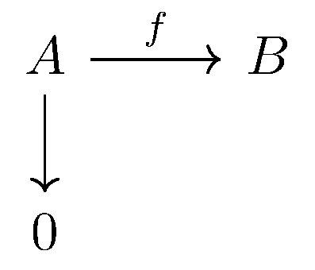
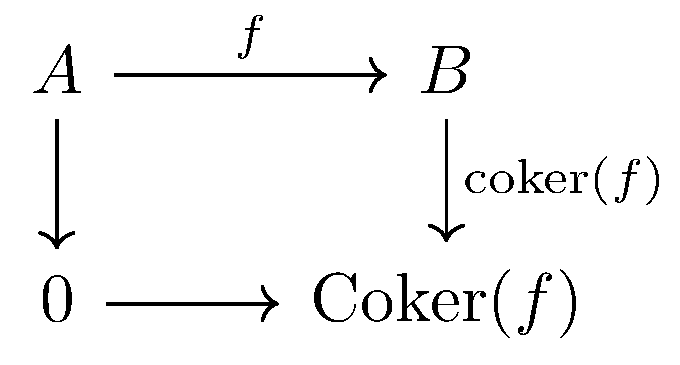
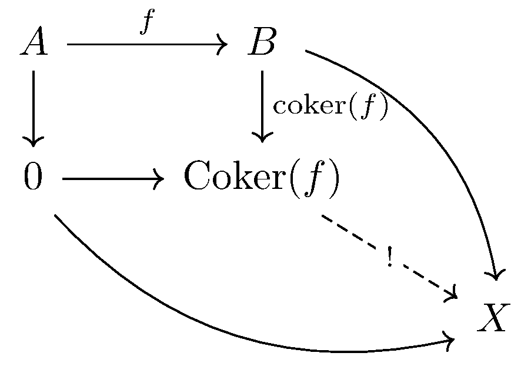

November 26th
Today I learned the definition of a cokernel, from Vakil. Essentially, the cokernel of a morphism $f:A\to B$ is the colimit of the following diagram.
In other words, the following diagram commutes and is initial with respect to doing so.
Explicitly, for any other object $X$ with a map $B\to X$ such that $A\to B\to X=A\to 0\to X,$ there is a unique map $\operatorname{Coker}(f)\to X$ making the diagram commute.
The intuitive picture here is that, while the kernel measures how large the initial group is with respect to a morphism $f,$ the cokernel roughly measures the size of the output. Our prototypical example, as usual, is in the category of abelian groups. We claim that $\op{coker}(f)$ is the natural embedding of $B$ into\[\op{Coker}(f)=B/f(A).\]Note this is a well-defined group because all subgroups are normal in the category of abelian groups. The fact that $A\to B\to\op{Coker}(f)=A\to0\to\op{Coker}(f)$ is apparent because we are just modding out by the image. Then for any other object $X$ with a morphism $g:B\to X$ such that $A\to B\to X=A\to0\to X,$ we see that because $f\circ g:A\to X$ must send all elements to the identity of $X,$ we see this is equivalent to\[g(f(A))=\langle0\rangle.\]It follows that the behavior of $g$ on $B$ can be uniquely identified with its behavior on cosets $B/f(A)$: for any such coset $b+f(A),$ we have $g(b+f(A))=g(b)+g(f(A))=g(b).$ So $g$ does factor through $B/f(A)$ by straightforward modding, and the action on $B/f(A)$ uniquely defines how $g$ behaves, so this factoring is unique. This is what we wanted.